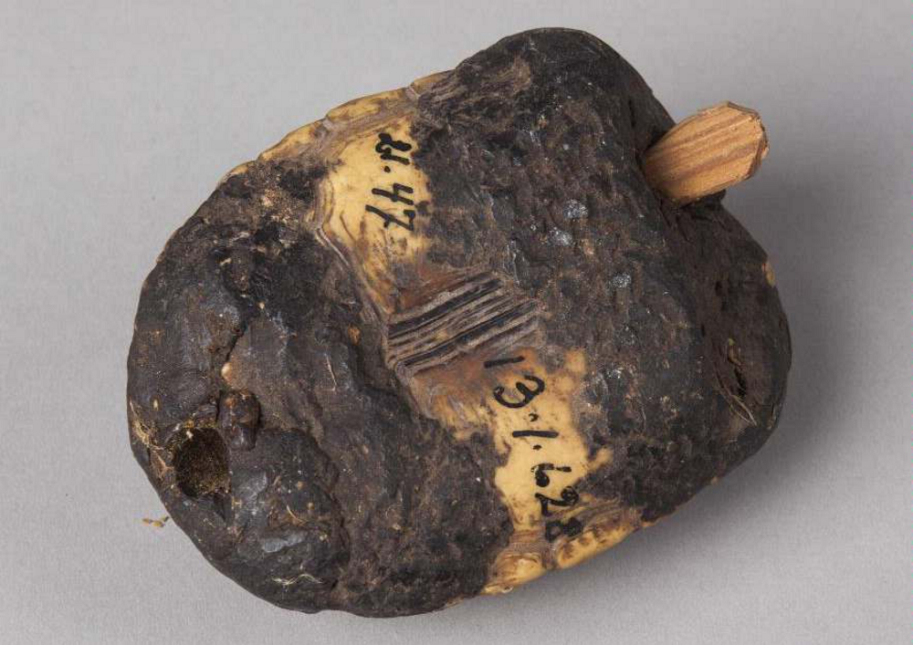

Sounding turtles of Bolivia and Peru
Sketch 013
Home > Blog A Musician's Log > Sketch 013
Turtle shells have been used for a long time in the five continents as raw material for the elaboration of different types of musical instruments.
In Bolivia, according to Marcelo Bórmida, the Ayoreo people of the department of Santa Cruz use the shells (generally those of the Patagonian tortoise, Chelonoidis chilensis and the Chaco tortoise, Acanthochelys pallidpectoris, but also of the Chelonoidis carbonaria and the yellow-footed tortoise, Chelonoidis denticulata) to make bells orohoró, to which they attach a clapper of palosanto (Bulnesia sarmientoi); Ayoreo hunters wear them at the waist to communicate with each other, and because they believe that wearing turtle parts makes them more stealthy. It is also present at the Asohsná festival (one of the few ceremonies of religious worship carried out by this native group), to enter and leave the camp. It is said that the bell is male or female according to the sex of the turtle, which can be differentiated thanks to the shape of the breastplate (the female's is flat and the male's is sunken).
In the department of Beni, Ernesto Cavour cites the "resonator of peta", a complete shell of a river turtle (peta, in eastern Bolivia) struck with a bone drumstick or rubbed with beeswax.
In Peru, the Culina or Madija of upper Purús and Santa Rosa, in the department of Ucayali, interpret the teteco, a shell of motelo (yellow-footed land tortoise, Chelonoidis denticulata) with one end smeared with cacaraba (Inga feuilleei) resin, which is rubbed. Its sound accompanies a 2-pipe reed api panpipe.
More information about these sound artifacts can be found in the free-access digital book Turtle shells in traditional Latin American music, accessible through the "Digital books on music. Series 1" section.